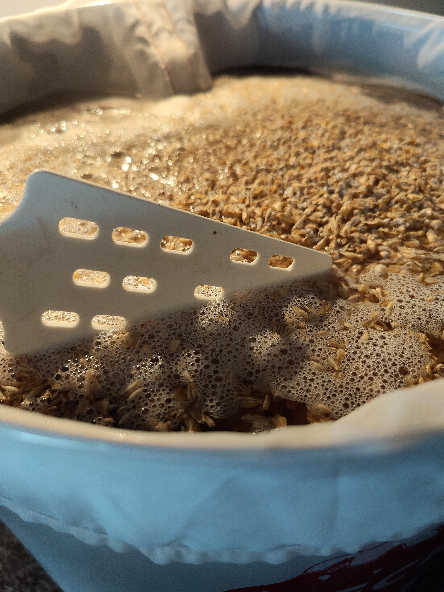
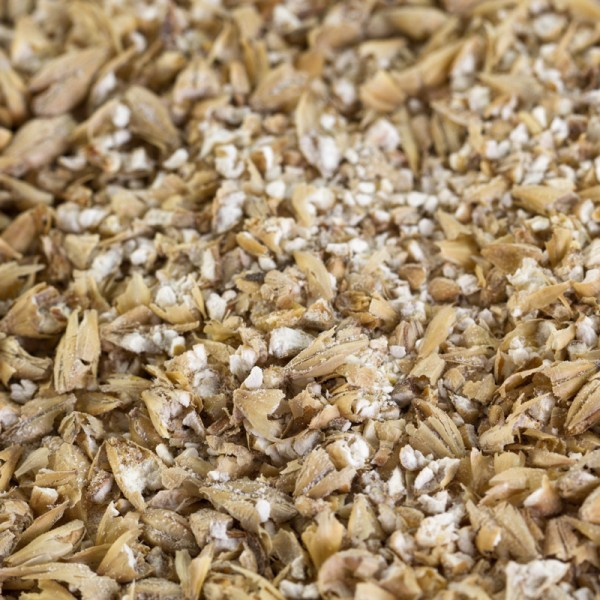
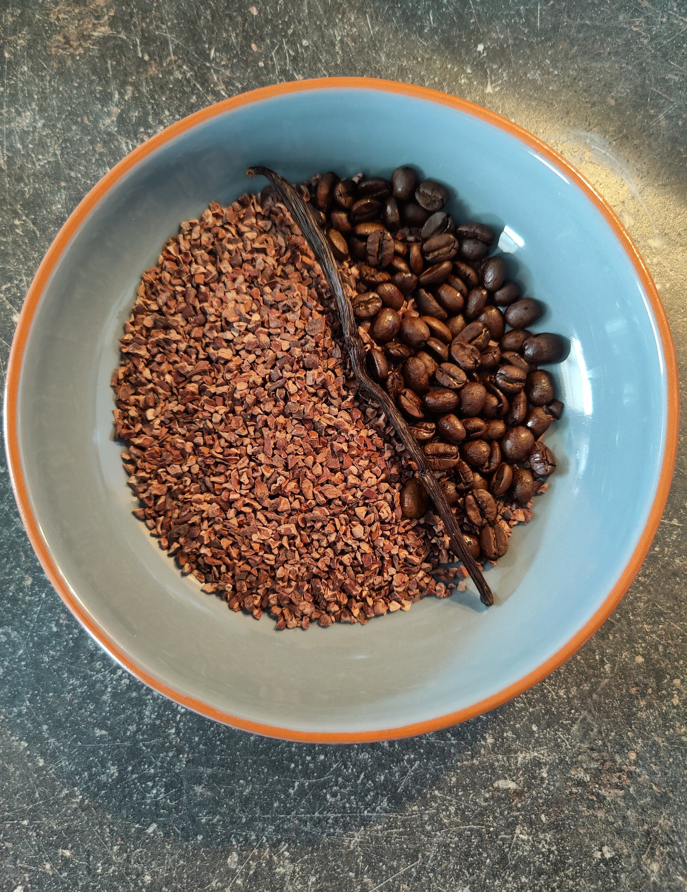
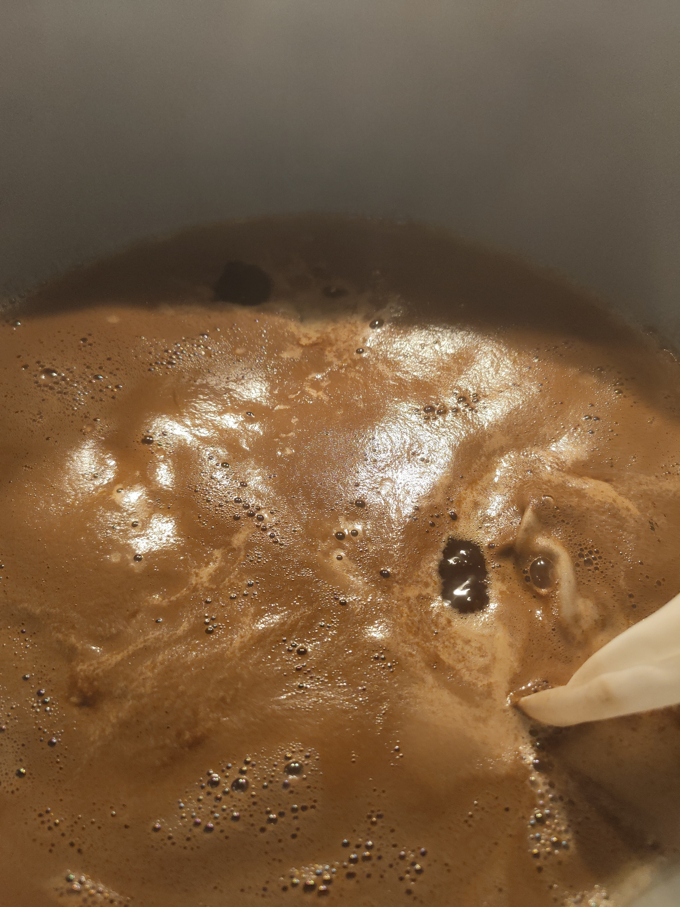
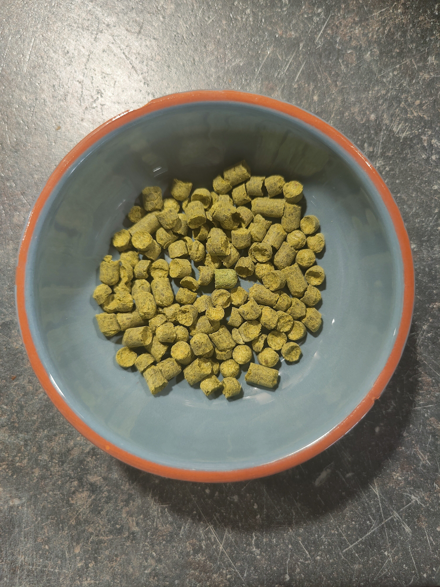
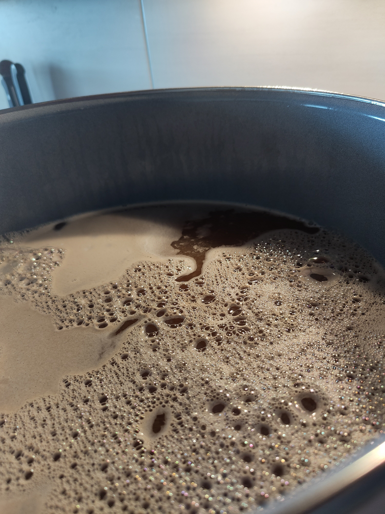
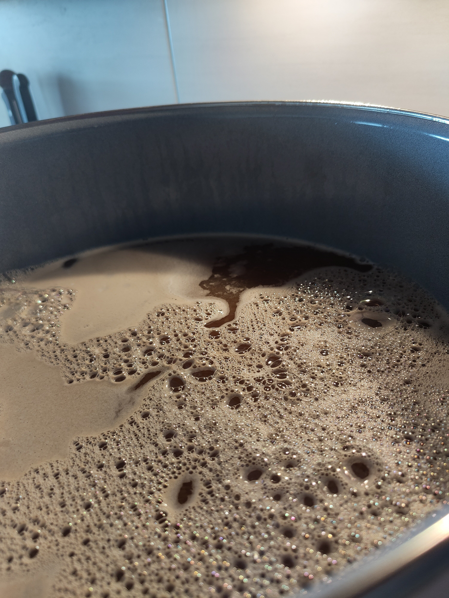

My Beer Project
To brew a beer was something I wanted to try out for a long time. My Idea here was to go after this initial thought and to combine it with design.
When I shop for beer, I first skim the shelves for the funniest or prettiest Labels. After this "first scan" I look at Styles and Ingredients.
This is how I started my new Hobby, and I want to introduce you here in some of the brewing steps as well as my Ideas for the Labels.
When I shop for beer, I first skim the shelves for the funniest or prettiest Labels. After this "first scan" I look at Styles and Ingredients.
This is how I started my new Hobby, and I want to introduce you here in some of the brewing steps as well as my Ideas for the Labels.






 

The following pictures are from my last "Brew day". The Beer is a Chocolate-Milk-Stout.
Sometimes some friends are meeting each other and play the game "Super Smash Bros", one of my friends has a catch Phrase that he likes his "Hyrule Choccy Milk". This is how this beer was a Idea. In my Ingredients you'll find Cacao-Nibs for the Chocolate flavor, Vanilla and Coffee beans next to the regular Beer-Ingredients like malt and hops. For the hops I tried to use some that give a Vanilla flavor and another one with the flavor profile of sweet fruits.
Sometimes some friends are meeting each other and play the game "Super Smash Bros", one of my friends has a catch Phrase that he likes his "Hyrule Choccy Milk". This is how this beer was a Idea. In my Ingredients you'll find Cacao-Nibs for the Chocolate flavor, Vanilla and Coffee beans next to the regular Beer-Ingredients like malt and hops. For the hops I tried to use some that give a Vanilla flavor and another one with the flavor profile of sweet fruits.